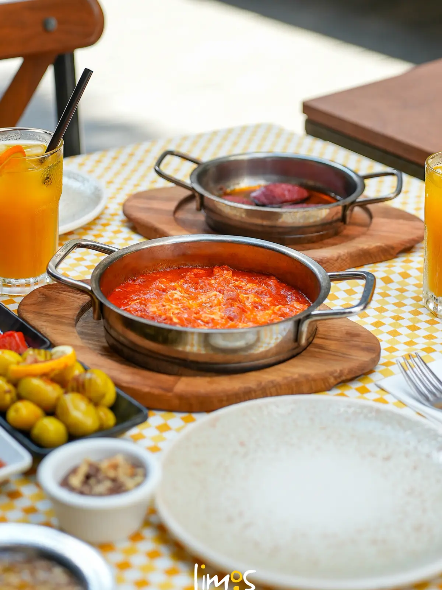

Sucuk Tava
300₺Kendi yağında, kenarları çıtır.
Beşiktaş — Sinanpaşa · Est. Kahvaltı Sokağı
Serpme ve à la carte kahvaltı, tavadan yeni inmiş menemenler, sıcacık pişiler ve demi gelmiş çay. Limos'ta sofra acele etmeden kurulur.
01 — Limos
Limos Kahvaltı, Beşiktaş Sinanpaşa'nın kahvaltı sokağında; taze peynirler, Erzincan balı, manda kaymağı, ev reçelleri ve gün boyu tazelenen çayın etrafında kurulan bir sofra. Bereketli ama özenli; bol ama savruk değil.
02 — Kahvaltı


Kahvaltı burada tek bir tabak değil, bir masa. Serpme sofrayı paylaşın ya da à la carte seçin; her iki türlü de peynirler taze, pişiler tavadan yeni iniyor. İlk çay serpme tabaklarda ikramımızdır.
Ezine beyaz peynir, taze kaşar, domates, salatalık, Erzincan balı, manda kaymağı, ev reçeli, siyah & yeşil zeytin, omlet (1 yumurta), 1 adet sigara böreği. Tek kişilik — ilk çay ikramımızdır.
3 adet sade pişi, domates, salatalık, Ezine beyaz peynir, ev reçeli, siyah & yeşil zeytin. Tek kişilik — ilk çay ikramımızdır.
03 — Masadan Seçtiklerimiz
Kendi yağında, kenarları çıtır.

Domates, biber, sucuk, kavurma ve kaşar.
Sahanda, bol sucuklu.

3 adet sade pişi, taze mezelerle.
Uzun kahvaltılar.
Demli çaylar.
Acelesi olmayan sabahlar.
05 — Atmosfer
Kahvaltı Sokağı'nın hareketi dışarıda; içeride tempo yavaş. Bahçede ya da serin salonda oturun, sofrayı kurun, acele etmeyin. Yemek sonrası bir fincan Türk kahvesi ikramımızdır.
Adres & çalışma saatleri

06 — Galeri

Misafirlerimiz
Google Haritalar'da 4,6 / 5 — 2.418+ değerlendirme
We really like this place. We come here every year when we live in Beşiktaş. The perfect cafe to have breakfast with friends, children and families. The service is amazing. The waiter named Sultan is very nice.
Елизавета Лобанова
Güzel bir kahvaltı deneyimi yaşadım. Çeşit yeterli, ürünlerin kalitesi başarılıydı. Tuğçe ve Sultan hanımefendiler oldukça ilgili ve güler yüzlüydüler.
Arden Karadayı
Yağmurlu bir cumartesi gününde hiçbir aksaklık olmadan kahvaltımızı miss gibi yaptık. Elinize emeğinize sağlık.
Esin Köse
Çok tatlı otantik bir yer, kahvaltısı lezzetli, servisi de süper. Her çalışanı güler yüzlü. Garson Efe bey sayesinde kahvaltımız çok iyi geçti.
Kaan Yıldırım
Buradaki yemekleri çok beğendim, her şey gerçekten çok lezzetliydi. Mekânın atmosferi oldukça güzel ve samimi.
Elif Şahin
Beşiktaş'ta 2-3 yerde kahvaltı yaptım ama gerçekten burası farklı; karşılama açısından da hizmet açısından da gayet güzel bir mekan.
Selçuk Arpacı
Her şey harikaydı, hele ekmeklerinin bir ayrıcalığı vardı. Güler yüzlü, kibar Sultan, teşekkürler.
Seher Sevincer
Yıllardır geldiğim kahvaltı mekanı, çok memnunum. Çalışanların ilgili ve sıcak yaklaşımları çok iyi.
Merve Emine Ertaş
Bahçesinde, yol üstünde ya da klimalı salonlarında oturabilirsiniz. Her şey bir yana, tüm çalışanların güler yüzlü olması çok daha güzeldi.
Cem Mazlum
Ortam çok güzel, çalışanların hepsi çok güler yüzlüydü. Tatlı çalan müzik eşliğinde kahvaltımızı büyük bir keyifle yaptık, pişisi harikaydı.
Serpil Arslan Yıldız
Limos'ta kahvaltı deneyimimiz son derece keyifliydi. Mutfağın kalitesi ve lezzeti açıkça hissediliyor. Kesinlikle tekrar tercih edilecek bir adres.
Berru Namlı
Kendi yaptıkları ekmek çok lezzetliydi. İki kişilik serpme kahvaltı için çok doyurucu ve yeterliydi. Kahve ikramı için teşekkürler.
Ezginur Okumuş
Lezzetli, doyurucu, keyifli ve rahat bir atmosfer. Her şey taze. Sınırsız çay ve yemeğin sonunda bir fincan Türk kahvesi. Şiddetle tavsiye ederim!
Dasha Kalinina
İstanbul'da seyahat ederken kahvaltı sokaklarını öğrendik ve tesadüfen ilk kez Limos'a gittik. Çok memnun kaldık.
Дарья Егорова
Nefis bir Türk kahvaltısı için harika bir gastronomi keşfi. Personel çok cana yakın.
Marie Travert
Honestly one of the best breakfast restaurants I've had. Clean, the şakşuka is amazing, the service is perfect.
Ali Al Saad
Yorumlar Google Haritalar üzerindeki misafir değerlendirmelerinden alınmıştır. Şerit üzerine gelince durur.
07 — Ziyaret
Sinanpaşa, Çelebi Oğlu Sk. No:11, 34353 Beşiktaş / İstanbul